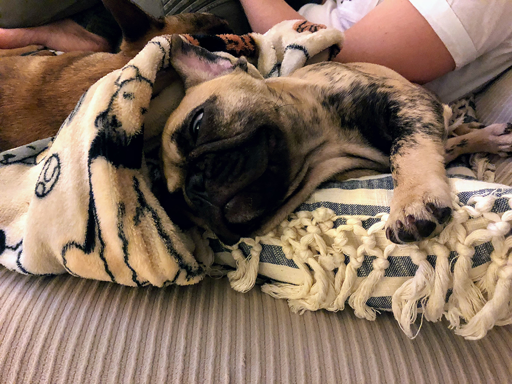
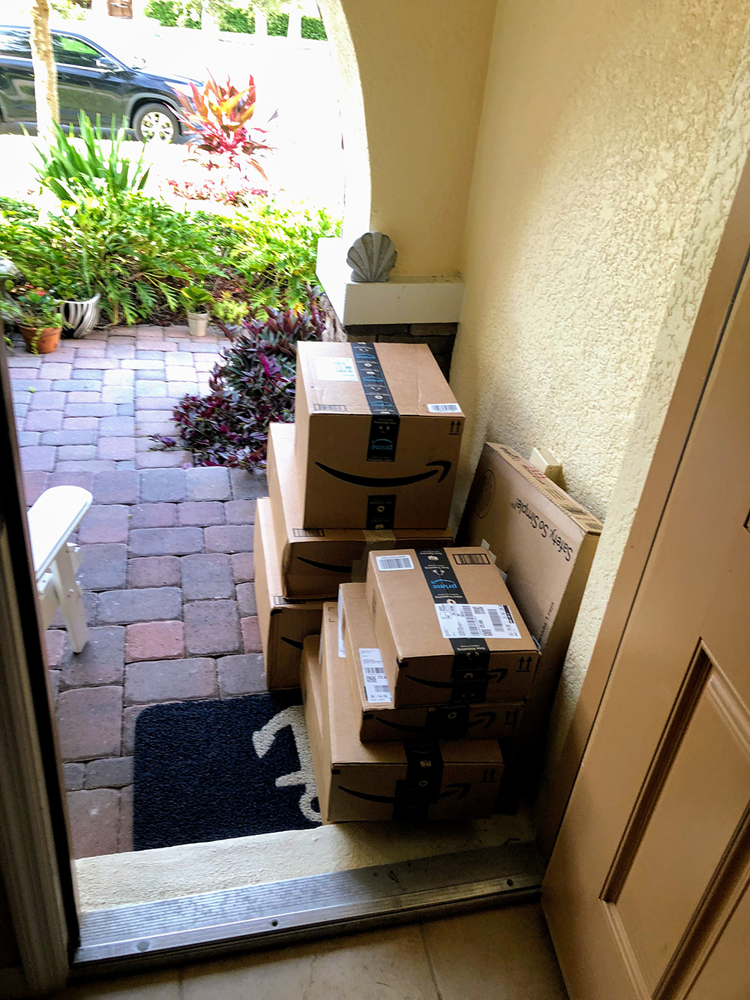
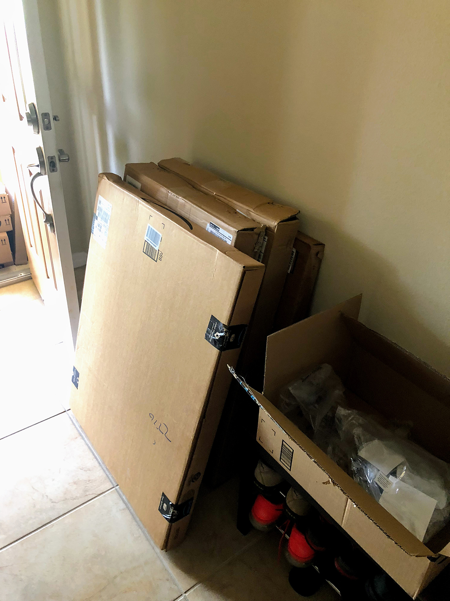
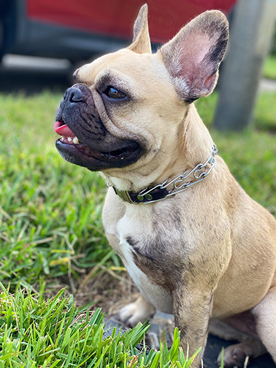

Getting to Know Your Frenchie
Congratulations! You are bringing home a French Bulldog puppy. Let's kick this off with our list below. Be sure to check out our Top 5 Do’s and Do not for French Bulldogs Puppies. We are here to help you jumpstart getting prepared so you can make the most out of your time getting to know your new puppy or puppies.
Our Grandma brought home her first Frenchie in 2005. That was when no one had ever heard of us satellite eared, silly dogs before. She named her new girl, Lily. Lily quickly stole hearts, and our family became Frenchie Feens for life. In 2007 Cayenne was brought home, Lily’s half-sister, and what a joy she was. Mom was 16 and 18 years old at the time and was not the primary caregiver for either. Fast Forward to 2018, in partnership with our Dad, for the time she would be the primary caregiver of not one, but two French Bulldog puppies. They have learned a lot, and we cannot wait to share it here.
Hello Friends! Casie and Andrew here and we are going to jump right in. We feel we must address their purchasing cost. Yikes! We couldn’t believe their price point when we started looking in early 2018, Casie, especially. They had quadrupled in price, and then some. We know that goes back to something with supply v demand, though, right? Right!! If you have not noticed Frenchies around lately, where have you been?!
While we are advocates of rescuing, we understand where buying from a REPUTABLE breeder may better fit your needs/wants. We always encourage looking into rescues before committing to buying from a well-known breeder. Here are some links to great rescue organizations:
We want to talk about some potential health issues, which will lead us to some maintenance costs for French Bulldogs. We want to bring light to this as living in Illinois with Lily and Cayenne; Casie did not have any health issues with the first pair. (Only later in life when they were older). Now, living in Florida with Sammy and Diego, their consistent problem being with their skin and allergies. As soon as Sammy came into contact with grass (as a 9-week old puppy, and we do not know the type of grass in our neighborhood), her skin started reacting. Sammy has very sensitive skin. Diego has struggled with hot spots in the past. We give them Cytopoint shots every 6-8 weeks, so they are not itching all the time ($154 for both dogs, roughly $1,000 per year - but SO worth it). Therefore, it makes us wonder about the environment; Florida v Illinois as a factor for French Bulldogs and their skin issues. Food for thought.
There has been a surge in pet insurance, and here is our experience - we want to preface that having or not having pet insurance is an entirely personal decision. When we first brought S&D (Sammy & Diego) home, we did not have pet insurance. We wish we had purchased pet insurance the day we brought them home. SO, we advise that if you are going to buy pet insurance, purchase it as soon as possible to avoid any issue with pre-existing conditions. We finally purchased pet insurance in the fall of 2019. For both dogs, we were paying $155 per month, with a $200 deductible, eligible for 80% coverage for non-pre-existing conditions, and not covering spaying/neutering, shots, etc. We certainly felt secure having it. However, we never reached our deductible, and it seemed nothing was ever covered (and we take our pets to the vet for any little thing). Our carrier recently informed us the price per month was going to jump to $203. Therefore, we decided to dedicate a savings account of $155 per month towards their vet bills. Also, we feel more secure with our $155 monthly savings to carry us for future vet bills. To each their own, of course!!
We remember the day we brought home Sammy and Diego, and what a joyful day that was! However, it quickly turned chaotic as our Amazon Shipment arrived the very same day.
 
Suddenly, we had two puppies who weren’t potty trained and loads of packages to unpack and organize. You can imagine how well that went.
With that in mind, we have compiled a list of must-have items that can help reduce the stress for new puppy owners so they can make the most out of their time with their new family member.
Crate, Potty Pads, Bed
So much can be said about having a crate. While we were undoubtedly hesitating to keep Sammy and Diego in crates, we did our research and found reassurance it was the right thing to do. We made sure to use it as a positive reinforcement space and not an area for punishment. (After all, giving harsh punishment to Frenchies does more harm than good. They respond better to positive reinforcement; high pitch voices, no spanking, that sort of thing.) Treats used every time they went in their crate. Eventually, Sammy and Diego would sit in their crates without being asked because they knew they would get a “treatsie.”
We also wanted to avoid creating codependency between one another. Therefore, we did invest in two separate crates, one for each dog. We have these 36-inch crate was perfect, and we love them! We also have these crate covers, as we felt those created a more cozy environment. During their first couple months of crate and potty training, we found it super helpful to put a potty pad in the back half of their crate and comfy bedding in the front half of their crate.
While it can be time-consuming and take more resources, we followed this guideline to how long we would keep them in their crates (on a workday, for example):
-
9-10 weeks / 30-60 minutes
-
11-14 weeks / 1-3 hours
-
15-16 weeks / 3-4 hours
-
>17 weeks / 4-6 hours
Also, we got this puppy playpen. It worked well when we would have to leave 9-week old Sammy alone for a few hours. We placed a potty pad, some food, water, and a place for her to rest inside the playpen. We felt better knowing she was in a safe space with room not to feel confined.
It was several months before we placed these beds inside their crate. Knowing how easy they wash, the beds probably could have been placed in there sooner (with the consequence of washing them more often, you decide). That’s what we love most about these beds - how easy they wash and dry and how they still hold a good shape.
Leashes, Harnesses, and Collars
Wow! Who knew leashes, harnesses, and collars could be so complicated! We certainly didn’t. Check out our article Top 5 Do’s and Don’ts for French Bulldog Puppies that talks more about collars for dogs who pull when on their leash.
We were educated on these items very quickly after taking Sammg to the top training facility in our area. Retractable leashes -- No. No. No. The dog has complete control in that situation, and the owner loses all control. It was recommended and repeatedly recommended to us to use this 6ft—nylon leash., which provides a tremendous amount of control to the owner compared to retractable leashes. Sammy can get pretty carried away with her tandems on our walks, and this leash is a great help.
Secondly, be careful with standard collars, especially if your dog pulls. We know French Bulldogs have very strong necks, but why test the waters with a standard collar and a dog that pulls? A collapsed trachea isn’t worth is. Therefore, we recommend this Herm Sprenger - please talk to a professional dog trainer to help you learn more about them. If your dog doesn’t pull, yes, a harness is an excellent option for brachycephalic dogs.
Otherwise, if your dog pulls, having them in a harness will only allow the pulling to get worse. If you are going to use a harness, we recommend this one . In the heat, so many other harnesses don’t breathe as well. We like to have as little as possible on our babies.
Wipes
We are going to be frank here, and we apologize if it’s to frank. We had some poopy butts on our hands. Which made their way to our cars, clothes, bed, skin; you name it, it had encountered a poopy butt. It didn’t take long for us to learn our lesson. “Does he have a poopy butt?” “Did you wipe her butt?” We laugh now, looking back. However, at the time, our heads were exploding. Is this a thing with puppies? Is it their food? What are we doing wrong? We still don’t have an explanation, but the poopy butts have subsided (Every once in a while we’ll see one, but for those most part, poopy butts are a thing of the past!)
We like the Earth Rated Dog Wipes. They’re plant-based, compostable, hypoallergenic, deodorizing, and can be used on their face and rear!